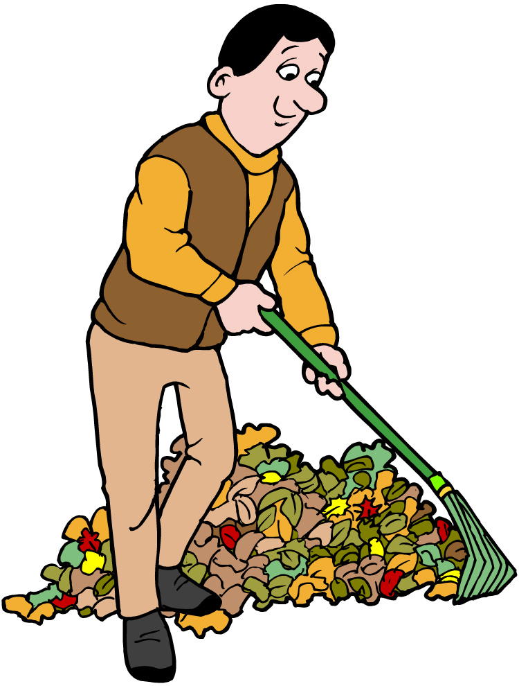
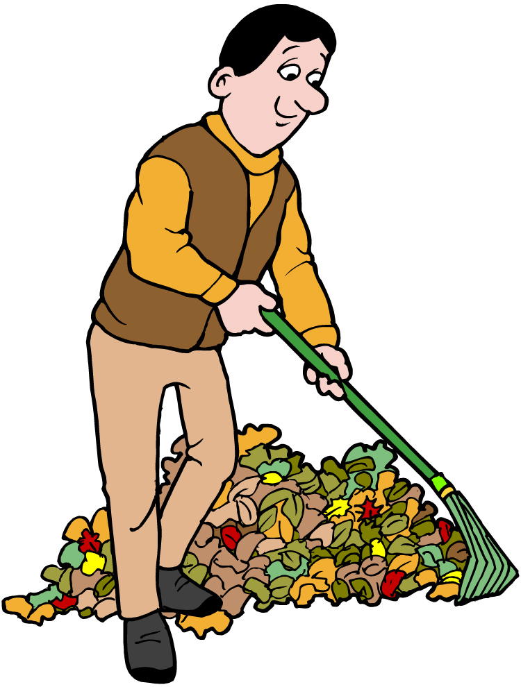

Thank you for choosing Jacob's Orlando Yardcare for your yardcare needs. Our company was founded in the great city of Orlando. The company was founded in 1996. Our founder and CEO went to the University of Central Florida for horticulture. This means that the company didn't start for the money but rather the love of yarden and yard cultivation and management. Since then we have been hiring staff that shares that same passion. We pride ourselves on our ability to help yards and gardens to thrive in all seasons or to bring back a garden that has withered or that has dead spots. Take a look at our images of jobs that we have completed and check out our reviews as well. Our customers have also reported that since using our services, they have won multiple "Best Yards" for their neighborhood and a couple have won for the whole city of Orlando. If you are interested in our services, please click contact in our navigation bar at the top or scroll down to the bottom to fill out the contact form. We will reach out when we get the form so we can start discussing how to make your yard goals a reality!
 

Our services include but are not limited to mowing/trimming sidewalks, raking yards, pulling weeds in yard or gardens, tree trimming, and yard baggage/removal.
Please enter the following information if you are interested in our services. We will reach out within 24 hours to discuss information further.